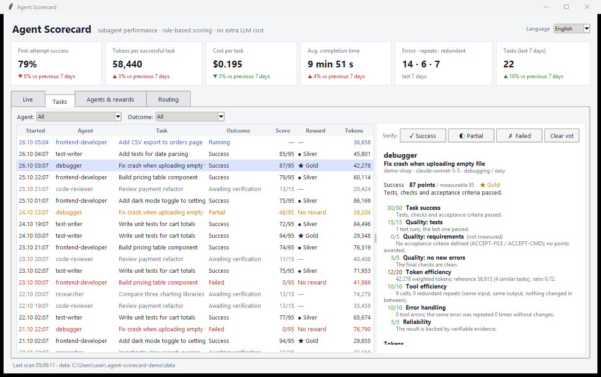
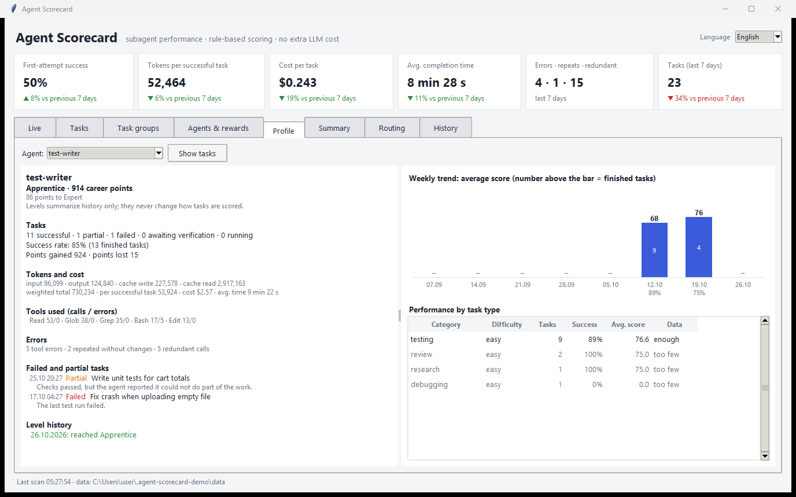
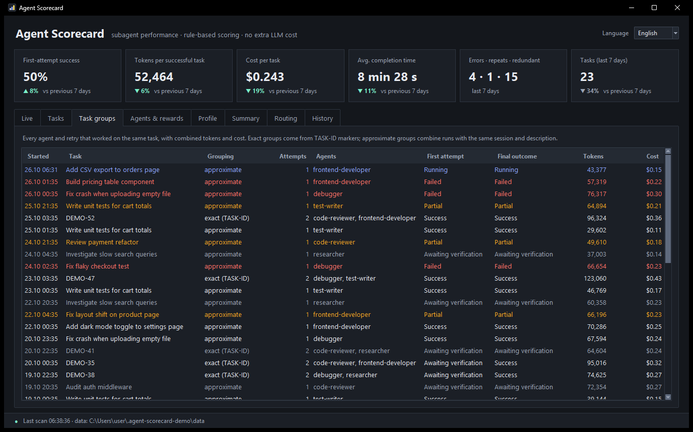
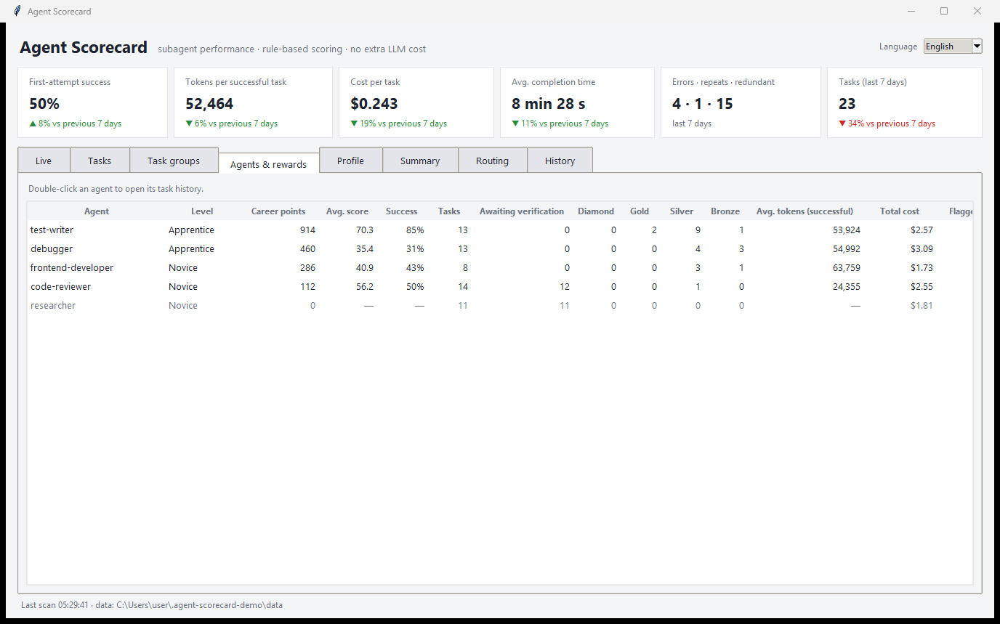
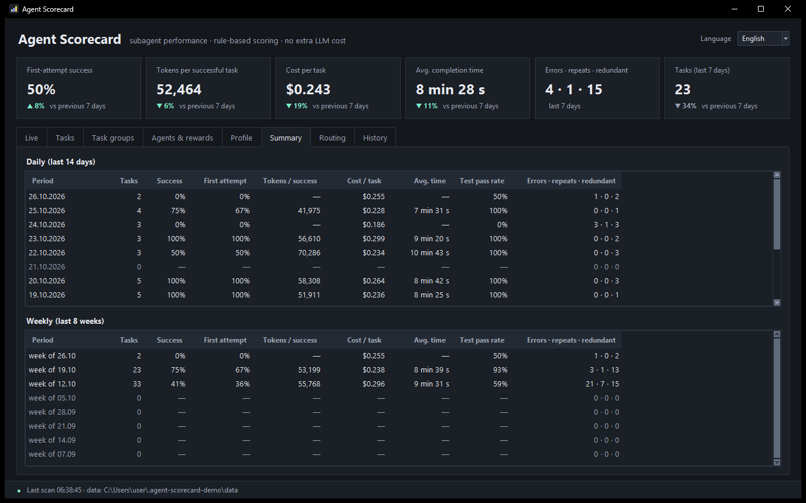
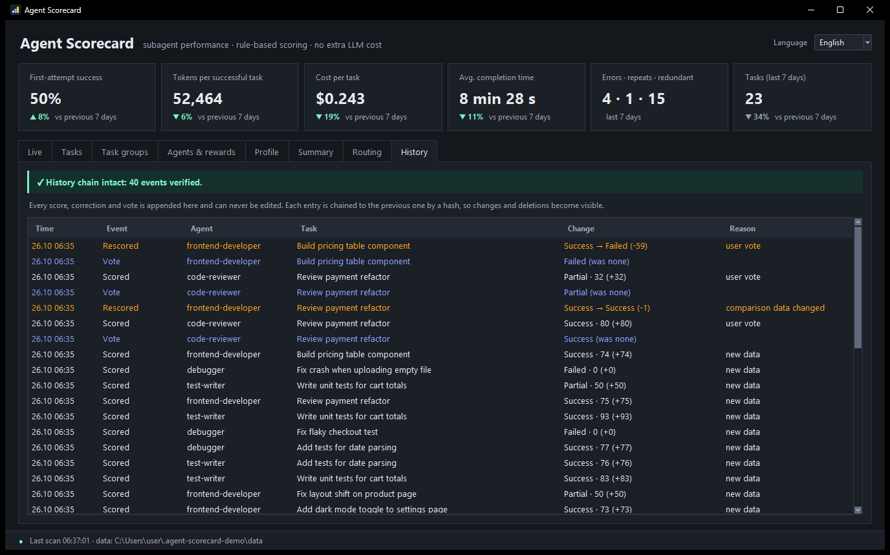
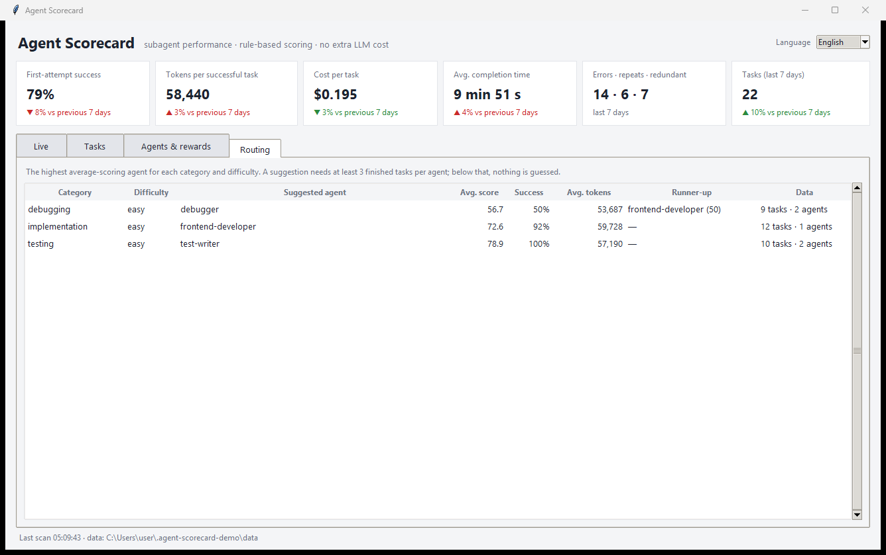

Track what your Claude Code subagents do, score every task out of 100 with fixed and inspectable rules, and reward agents that deliver verified results without wasting tokens. Scoring never calls an LLM.

Everything is computed from the transcripts Claude Code already writes to disk, using plain Python and a local SQLite file. No API keys, no extra tokens, no extra packages.
Agent, task, input/output/cache tokens, tool calls, errors, duration and API-equivalent cost. Running agents show up live.
Test runs, build and lint checks, and acceptance criteria. Unverifiable work waits for verification instead of counting as success.
100 points in six sections, with Diamond, Gold, Silver and Bronze tiers. Every point links back to the data it came from.
Identical calls with identical output and nothing changed in between, and failures retried without any change. Re-running tests is never penalized.
The best agent for each task category and difficulty, shown only once there is enough data to say so.
Every score, correction and vote goes into an append-only, hash-chained log. Failed tasks cannot be deleted to inflate a success rate, and tampering shows up.
Career points and levels from Novice to Legend, plus per-agent profiles with failures, strongest task types and weekly trends. Levels never affect scoring.
When several agents or retries work on one task, their tokens and cost are added up, so the real cost of a task is visible.
Switch the dashboard language at any time. Stored score breakdowns are shown in the language you choose.
Two Claude Code hooks and a transcript parser do all the work. The hook never blocks Claude: it always exits cleanly and logs its own errors.
Points that cannot be measured are not awarded, and every score is shown with its measurable maximum.
Missing data never looks like failure or success. All thresholds live in a single rules.json.
| Section | Points | How it is measured |
|---|---|---|
| Task success | 30 | Last test and build results, acceptance criteria, or your vote. Partial success is capped at 15. Reporting unfinished work as done costs 15 points. |
| Output quality | 25 | Last test run passed (15), acceptance criteria met (5), no regression (5). |
| Token efficiency | 20 | Compared with earlier successful tasks of the same category and difficulty: half the reference earns 20, the reference itself earns 5, and 1.5× or more earns 0. Needs verified success and at least 3 reference tasks. |
| Tool efficiency | 10 | Minus 1 per redundant repeat. Needs verified success. |
| Error handling | 10 | Minus 2 each time the same failure is retried without changes. |
| Reliability | 5 | Evidence-backed report (5), clearly saying it was not verified (3), or claiming success with no evidence (minus 15). The same event is never penalized twice. |
The orchestrating agent can add these lines to a subagent prompt. Turkish aliases work too.
ACCEPT-FILE: src/billing/invoice.py # the file exists and this agent wrote it ACCEPT-CMD: npm test # the agent ran it and the last run passed DIFFICULTY: hard # easy | medium | hard CATEGORY: debugging TASK-ID: BILL-142 # groups agents and retries on one task
Live agents, every task with its breakdown, per-agent scorecards and rewards, and routing suggestions, with week-over-week trend cards.






Screenshots use fictional demo data generated by tools/make_demo.py.
Requires Python 3.10+ on your PATH as python. From any terminal with Claude Code installed:
claude plugin install agent-scorecard --marketplace BishaThemis/agent-scorecard
Or inside Claude Code:
/plugin marketplace add BishaThemis/agent-scorecard /plugin install agent-scorecard@agent-scorecard
Restart Claude Code, then run /agent-scorecard:scorecard for a text report or /agent-scorecard:scorecard dashboard
to open the desktop dashboard. Existing transcripts are scanned on first start, so earlier subagent runs show up too.
Based on configurable list prices. On subscription plans it is not your actual bill. Models without a price show no cost instead of a guess.
Tokens the main agent spends writing prompts and reading results are not attributed to subagents.
"Done" and "partial" claims are found with text patterns and can be wrong. Your vote in the dashboard always wins.
Not a public API, and it may change between Claude Code versions. The parser targets Claude Code 2.1.310.